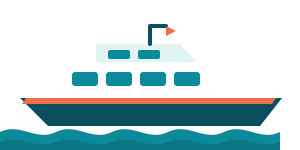

Qatar Airways
nov. 16. 15:15 → 17. 08:30
nov. 24. 18:10 → 25. 06:45
nov. 24. 18:10 → 25. 06:45



Mindenhol egy lehetőség a választott, pontos árral. A többi alatta van, alternatívaként.
Leszállás Mahén 08:30-kor, onnan Praslin.
két főre, kb. 105 300 Ft4742 SCR, adóval együtt (élő kosárár, 2026-10-10)
Két főre, Economy, plusz két taxi (kb. 21 900 Ft60 €). Csak a 16:30-as megy, 18:30 körül értek a szállásra, sötétben. kb. 43 800 Ft120 €-val olcsóbb, de kb. 8 óra várakozás egy éjszakai repülés után.
catcocos.comnov. 16. 11:00 – nov. 25. 08:00 (élő árak, lekérve 2026-10-11).
Panda Parken 2, Reichsstraße 8, Fischamend
Ingyenes shuttle, 10 perc, éjjel-nappal. Akciós ár, a listaár 117,30 €.
vie-shop3 perc a terminálig, váróterem.
Nincs saját transzfer, kb. 9 perc S-Bahnnal (a jegy külön, nem ellenőrzött).
4 perc séta, fedett.

A teendők határidő szerint, pipálhatóan: a legközelebbi a lista tetején. A parkolás már kész.
Megnyitom